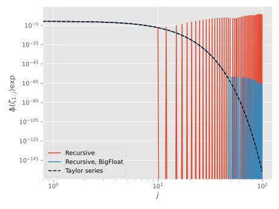

Divided differences
The divided differences of a function $f$ with respect to a set of interpolation points $\{\zeta_i\}$ is defined as (McCurdy 1984)
where the integral is taken along a simple contour encircling the poles once. A common approach to evaluate the divided differences of $f$, and an alternative definition, is the recursive scheme
which, however, is prone to catastrophic cancellation for very small $\abs{\zeta_i-\zeta_j}$. This can be partially alleviated by employing BigFloats, but that will only postpone the breakdown, albeit with ~40 orders of magnitude, which might be enough for practical purposes (but much slower).
For specific choices of $f$, efficient and accurate algorithms can be devised. MatrixPolynomials.φₖ_ts_div_diff is based upon the fact the divided differences in a third way can be computed as (McCurdy 1984, Opitz 1964)
i.e. the first row of the function $f$ applied to the matrix
The right-eigenvectors are given by (Opitz 1964)
and similarly, the left-eigenvectors are given by
such that
However, straight evaluation of $(\ref{eqn:div-diff-mat-right-eigen},\ref{eqn:div-diff-mat-left-eigen})$ is prone to the same kind of catastrophic cancellation as is $\eqref{eqn:div-diff-recursive}$, so to evaluate $\eqref{eqn:div-diff-mat-fun}$, one instead turns to Taylor or Padé expansions of $f(\mat{Z}_{i:j})$.
As an illustration, we show the divided differences of exp over 100 points uniformly spread over $[-2,2]$, calculated using $\eqref{eqn:div-diff-recursive}$, in Float64 and BigFloat precision, along with a Taylor expansion of $\eqref{eqn:div-diff-mat-fun}$:

It can clearly be seen that the Taylor expansion is not susceptible to the catastrophic cancellation; it is however, not valid outside the interval $[-1.59,1.59]$, so the domain of interest has to be rescaled prior to its usage.
MatrixPolynomials.⍋ — Function.⍋(f, ξ, args...)Compute the divided differences of f at ξ, using a method that is optimized for the function f, if one is available, otherwise fallback to MatrixPolynomials.std_div_diff.
MatrixPolynomials.std_div_diff — Function.std_div_diff(f, ξ, h, c, γ)Compute the divided differences of f at h*(c .+ γ*ξ), where ξ is a vector of (possibly complex) interpolation points, using the standard recursion formula.
MatrixPolynomials.φₖ_ts_div_diff — Function.φₖ_ts_div_diff(k, ξ, h, c, γ[, τ=1])Compute the divided differences of φₖ at τ*h*(c .+ γ*ξ), where ξ is a vector of (possibly complex) interpolation points, using the algorithm in Table 2 of
- Caliari, M. (2007). Accurate evaluation of divided differences for polynomial interpolation of exponential propagators. Computing, 80(2), 189–201. DOI: 10.1007/s00607-007-0227-1
Bibliography
McCurdy, A. C., Ng, K. C., & Parlett, B. N. (1984). Accurate computation of divided differences of the exponential function. Mathematics of Computation, 43(168), 501–501. DOI: 10.1090/s0025-5718-1984-0758198-0
Opitz, G. (1964). Steigungsmatrizen. ZAMM - Journal of Applied Mathematics and Mechanics / Zeitschrift für Angewandte Mathematik und Mechanik, 44(S1), DOI: 10.1002/zamm.19640441321